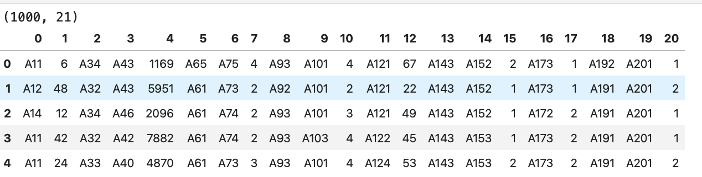
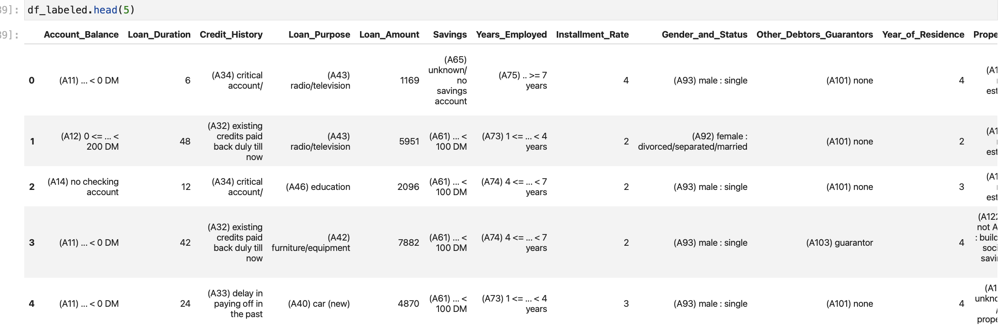

ML Project Setup
Generic Setup
Below is a project setup that I follow for machine learning projects.
| └── DATASET_1 <-- Separate folder per dataset
│
├── DATASET-01-Import.ipynb <-- sequence of notebooks that
├── DATASET-02-EDA.ipynb <-- focus on a single ML step
├── DATASET-03-Model.ipynb <-- each runnable as is from current folder
│
├── data <-- cleaned data ready for EDA/analysis
├── orig <-- original data before any cleaning/wrangling/etc
└── output <-- all generated content
|
UPDATE: Change to support using notebooks in COLAB and on local machines.
-
In COLAB all notebooks are stored in the same folder, so we need to include the dataset name in the notebook name, otherwise it is likely you will upload the wrong notebook when submitting your assignments.
So the naming convention that we will use for notebooks is
DATASET-NUM-TASK.ipynb
-
where
DATASET is the name of the dataset,
NUM is a two-digit, zero-padded task number, and
TASK is the task name.
- You can leave out the
DATASET- if you are always working locally.
-
You can append any string between the
TASK and .ipynb — my grading script will ignore it.
-
We need to link the google drive to the COLAB account so that we can use datasets between notebooks and to save our work for later use. However in COLAB we can't have datasets and output in a sub-folder of the current folder so we will need to update the directory/file access code given below.
You don't have to adopt this structure, but it has advantages, in that if you do, than any issues with grading are my fault and not yours :-).
- Separation of individual steps in the machine learning workflow
- Reduces computation, reloading of data.
- Facilitates automation.
- Each notebook is runnable as is — regularly reset kernel and run all cells to verify that this property remains true.
- Notebooks named to indicate order and purpose.
- Based on the practical/assignment I will either ask for the individual notebooks or the notebooks and the contents of the
output directory. We will cover this in a few weeks.
Example Setup — German Credit
This is a small dataset ((1000 observations) X (20 features + 1 target)) and is available from UCL in two formats, we are going to use the original format and the associated datasheet so you get more exposure in cleaning data.
The outline of steps needed are:
Step 1: In your datasets folder create a folder to store all files relating to the German Credit dataset, I use German_Credit.
Step 2: Create a new notebook, called 01-Import.ipynb and create a cell with following contents (list of standard imports and settings)
1
2
3
4
5
6
7
8
9
10
11
12
13
14
15
16
17 | import numpy as np
import pandas as pd
import matplotlib.pyplot as plt
import seaborn as sns
from scipy import stats
import yaml
pd.set_option('display.max_columns', None)
pd.set_option('display.width', 1000)
pd.set_option('display.max_rows', None)
sns.set_style("darkgrid")
from IPython.display import display, Markdown
from pprint import pprint
DEBUG = True
|
Step 3: Create file tree and download datasets.
UPDATE: Changed to support using notebooks in COLAB and on local machines.
-
Created variable
ROOT which contains the root directory which the subfolders
orig, data, and output. If working locally then this just the current folder.
-
All file access from here to the end has a
f"{ROOT}/" prefix.
1
2
3
4
5
6
7
8
9
10
11
12
13
14
15
16
17
18
19
20
21 | DATASET = "German Credit"
import os, sys
COLAB = 'google.colab' in sys.modules
if COLAB:
from google.colab import drive
if not os.path.isdir("/content/gdrive"):
drive.mount("/content/gdrive")
ROOT = f"/content/gdrive/MyDrive/datasets/{DATASET.replace(' ','_')}/"
if not os.path.isdir(ROOT): os.makedirs(ROOT)
else:
ROOT = "./"
def makedirs(d):
if COLAB:
if not os.path.isdir(ROOT+d): os.makedirs(ROOT+d)
else:
if not os.path.isdir(ROOT+d): os.makedirs(ROOT+d, mode=0o777, exist_ok=True)
for d in ['orig','data','output']: makedirs(d)
|
Next cell downloads the required files and save a copy "locally"
| for filename in ["german.data", "german.data", "german.doc", "german.data-numeric"]:
source = f"https://archive.ics.uci.edu/ml/machine-learning-databases/statlog/german/{filename}"
target = f"{ROOT}/orig/{filename}"
if not os.path.isfile(target):
print (f"Downloading remote file {filename}", sep="")
import urllib.request
urllib.request.urlretrieve(source, target)
else:
print(f"Using local copy of {filename}")
|
Step 4: Import dataset and view data.
| df = pd.read_csv(f"{ROOT}/orig/german.data", sep =" ", header=None)
print(df.shape)
df.head(5)
|
This should have output

Note:
- ALWAYS, ALWAYS output the dataset shape — simplest sanity check of data.
- No header information in dataset.
- Data is encoded, details in
german.doc.
Step 5: Label the columns
| df.columns = ["Account_Balance", "Loan_Duration", "Credit_History",
"Loan_Purpose", "Loan_Amount", "Savings", "Years_Employed",
"Installment_Rate", "Gender_and_Status", "Other_Debtors_Guarantors",
"Year_of_Residence", "Property", "Age", "Installment_Plans", "Housing", "Existing_Credits", "Job", "Dependents",
"Telephone", "Foreign",
"Credit_Rating"]
|
Step 6: Preprocess the dataset so that it contains descriptive string based on data from german.doc rather just the existing category codes:
- Create a new dataset, called
df_labeled, as a copy of df.
- For each categorical feature, replace the category code with a string (code + description) taken from
german.doc so the resulting dataset looks like in the following image.
- Convert features to suitable type (Category with (un)ordered labels).

There is a number of ways to do the above steps. I use regular expressions to parse german.doc and yaml to store the resulting encoding dictionary for later use.
Step 7: Save labeled dataset to data folder. Use pickle format, instead of csv, so that meta information (data type, etc) is preserved.
UPDATE: Note the change to support using notebooks in COLAB and on local machines.
| df_labeled.to_pickle(f"{ROOT}/data/df_labeled.pickle")
with open(f"{ROOT}/data/mapping.yaml", "wt") as stream:
yaml.safe_dump(mapping, stream)
|
Ok we are now ready to move to the next step, exploratory data analysis (EDA).